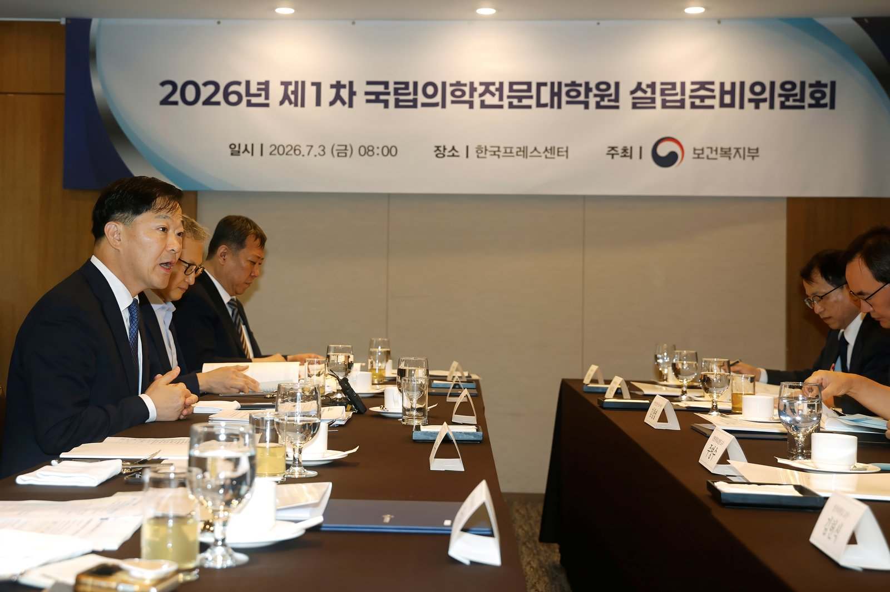
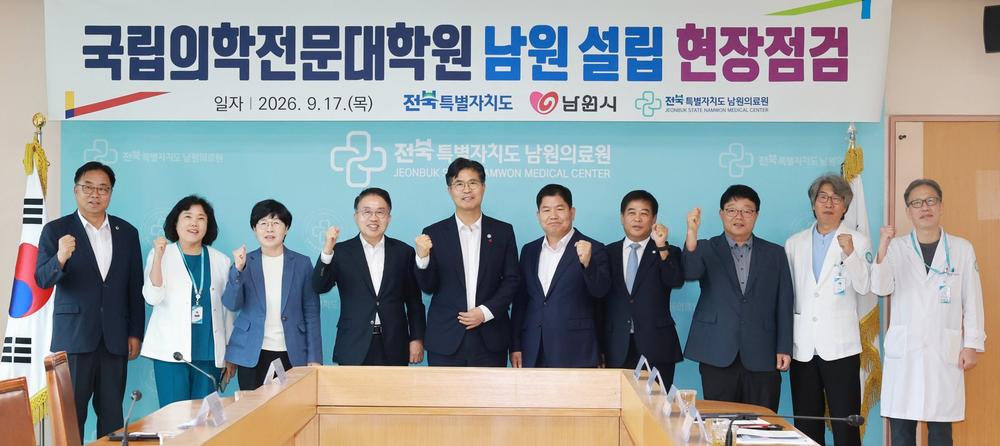

AI경제저널=김갑봉 기자 | 2026년 10월 1일 정부서울청사에서 국립의학전문대학원 설립준비위원회가 열렸다. 위원회는 국립의전원 자리를 전북 남원시로 정했다. 국립의전원법은 11월 27일 시행된다.
지역의사법은 2026년 2월 시행됐다. 의대들은 첫 지역의사 수시 원서 접수도 마쳤다. 인천 진료권 몫은 6명이다.

2026년 7월 3일 서울 한국프레스센터에서 열린 국립의학전문대학원 설립준비위원회 첫 회의(출처 보건복지부)
묶여 있던 두 법 국회 통과
인천투데이는 2025년 10월 5일 공공의대법과 지역의사제법이 모두 국회에 묶여 있다고 보도했다. 국회 보건복지위원회 법안심사소위원회가 그해 8월 19일 지역의사제 법안을 계속 심사하기로 했다.
국회는 2025년 12월 2일 본회의에서 「지역의사의 양성 및 지원 등에 관한 법률」을 의결했다. 재석 231명 가운데 찬성 217명, 반대 6명, 기권 8명이었다. 보건복지위원회가 강선우·이수진 의원 안 등 네 건을 합쳐 낸 법안이다.
공공의대 법안은 국립의전원법으로 이름을 바꿔 통과했다. 보건복지위원회는 2026년 3월 13일 박희승 의원(더불어민주당)이 낸 공공보건의료대학 법안 등 세 건을 합쳤다.
국회는 4월 23일 본회의에서 재석 166명 가운데 찬성 158명, 반대 4명, 기권 4명으로 의결했다. 1년여 전 쟁점이던 의무복무 기간은 두 법에서 달라졌다. 지역의사는 10년 그대로다. 박희승 의원 안의 공공의대 졸업생 10년 복무는 국립의전원법에서 15년으로 늘었다.
지역의사 10년 의무복무
지역의사법은 2025년 12월 23일 공포돼 2026년 2월 24일 시행됐다. 의과대학은 정원 일부를 지역의사선발전형으로 따로 뽑는다. 지원 자격은 대학이 있는 지역이나 인접 지역에서 중학교와 고등학교를 나오고 그동안 그곳에 산 학생이다.
국가와 지방자치단체는 입학금과 수업료, 교재비, 기숙사비를 지원한다. 졸업생은 정해진 지역에서 10년 동안 일한다. 복무를 다하지 않은 졸업생은 지원받은 돈에 법정이자를 더해 돌려준다.
보건복지부 장관이나 시·도지사의 시정명령을 따르지 않으면 장관이 1년 범위에서 면허를 정지할 수 있다. 정지를 세 번 이상 받거나 의무복무를 하지 않으면 면허를 취소할 수 있다.
정부는 2026년 3월 10일 국무회의에서 시행령을 의결했다. 서울을 뺀 32개 의대는 전체 정원 합계의 10% 이상을 지역의사로 뽑는다.
남원 국립의전원 2029년 개교 목표
국립의전원 설립준비위원회는 2026년 7월 3일 위원 10명으로 출범했다. 위원장은 보건복지부 제2차관이다. 10월 1일 남원 확정은 2018년 4월 정부가 남원 설립을 발표한 지 8년여 만이다.
입학정원은 100명이다. 학교는 학생에게 학비를 지원하고, 국가는 설립비와 인건비·운영비를 댄다. 졸업생은 면허를 딴 뒤 보건복지부 장관이 지정한 공공보건의료기관 등에서 15년 동안 의무복무한다.
보건복지부는 2029년 개교, 2030년 교육과정 시작을 목표로 잡았다. 남원의료원을 국립중앙의료원 남원병원으로 바꿔 약 500병상까지 단계적으로 늘릴 계획이다.

2026년 9월 17일 이원택 전북특별자치도지사가 남원의료원에서 국립의전원 남원 설립 준비 상황을 점검하며 관계자들과 기념촬영을 하고 있다(출처 전북특별자치도, 공공누리 제4유형)
보건복지부는 7월 21일부터 8월 31일까지 시행령과 시행규칙 안을 미리 공개해 의견을 받았다. 시행령안은 11월 17일 법제처 심사를 마쳤고, 국무회의에는 아직 오르지 않았다.
김성근 대한의사협회 대변인은 법안 심사 중이던 1월 15일 국립의전원 법안을 비판했다. 「의료인의 기본권을 침해하고 의학교육의 본질을 훼손할 소지가 크다」는 주장이다.
의협은 10월 1일 정례 브리핑에서 설립 장소가 정해졌다고 해서 그간 지적한 우려가 해소된 것은 아니라고 밝혔다.
공중보건의사 593명, 일본 지역정원 20%
국회입법조사처 한진옥 입법조사관은 2026년 5월 7일 보고서를 냈다. 군 복무 대신 농어촌 등에서 일하는 의과 공중보건의사는 2019년 1960명에서 2026년 593명으로 줄었다.
보고서는 보건복지부 자료를 인용해 2027년 전체 보건지소의 86.9%인 1083곳에 공중보건의사를 두지 못한다고 적었다. 공중보건의사 제도와 지역의사법으로 길러낼 인력이 서로 이어지도록 고려해야 한다고도 밝혔다.
1년여 전 기사는 우봉식 당시 의협 의료정책연구원장이 메디컬타임즈 인터뷰에서 지역의사제를 「이미 다른 나라에서 실패한 제도」라고 말했다고 전했다.
일본은 지역 의료에서 일할 의사를 기르려고 지역정원을 따로 뽑는다. 후생노동성 자료에서 2026년 의대 정원(자치의과대학 제외) 9253명 가운데 1867명(20.2%)이 지역정원 등이다.
후생노동성이 4월 17일 검토회에 낸 자료는 일본 전국의학부장병원장회의 조사를 실었다. 2008~2023년 지역정원 입학생 1만4173명 가운데 579명(4.1%)이 지역 근무 의무에서 이탈했다.
첫 수시 11대 1, 인천 몫 6명
보건복지부는 4월 30일 2027학년도 지역의사 정원 490명을 대학·진료권별로 나눠 확정했다. 2028~2031학년도는 해마다 613명이다. 2032학년도 이후 규모는 2029년 다시 검토한다.
선발 인원 70%는 대학 소재지와 인접한 도의 진료권에서, 30%는 광역권에서 뽑는다. 진료권은 시·군·구 한 곳이나 여러 곳을 묶은 지역 의료 단위다. 경기·인천은 광역권으로 뽑지 않는다.
종로학원은 9월 14일 첫 수시 원서 접수 결과를 집계했다. 31개 의대가 수시로 458명을 모집했다. 5076명이 지원해 경쟁률은 11.08대 1이었다.
인천 진료권 몫은 인천서북권(서구·강화군) 3명, 인천중부권(중구·동구·미추홀구·옹진군) 3명이다. 가천대·인하대·아주대가 두 진료권에서 각각 1명씩 뽑는다. 남동구·연수구·부평구·계양구는 모집 진료권에 없다.
인하대 지역의사전형은 6명 모집에 57명이 지원해 9.5대 1, 가천대는 7명 모집에 61명이 지원해 8.71대 1이었다. 두 대학 모두 인천 몫은 2명이다. 대학들은 12월 18일까지 수시 합격자를 발표한다.
이 글은 인천투데이 2025년 10월 5일 게재 기사를 최신 상황으로 고쳐 썼다.
참고문헌
법령·공식 발표자료
- 「지역의사의 양성 및 지원 등에 관한 법률」, 법률 제21239호, 2025년 12월 23일 제정·2026년 2월 24일 시행, 국가법령정보센터, https://www.law.go.kr/법령/지역의사의양성및지원등에관한법률
- 「지역의사의 양성 및 지원 등에 관한 법률 시행령」, 대통령령 제36177호, 2026년 3월 10일 제정(현행 제36642호, 2026년 9월 4일 일부개정), 국가법령정보센터, https://www.law.go.kr/법령/지역의사의양성및지원등에관한법률시행령
- 「국립의학전문대학원 설립 및 운영에 관한 법률」, 법률 제21686호, 2026년 5월 26일 제정·2026년 11월 27일 시행, 국가법령정보센터, https://www.law.go.kr/법령/국립의학전문대학원설립및운영에관한법률
- 국회 보건복지위원장, 「지역의사의 양성 및 지원 등에 관한 법률안(대안)」 제2214617호, 2025년 11월 26일, 법제처 국민참여입법센터 국회입법현황, https://opinion.lawmaking.go.kr/gcom/nsmLmSts/out/2214617/detailRP
- 국회 보건복지위원장, 「국립의학전문대학원 설립 및 운영에 관한 법률안(대안)」 제2217928호, 2026년 3월 30일, 법제처 국민참여입법센터 국회입법현황, https://opinion.lawmaking.go.kr/gcom/nsmLmSts/out/2217928/detailRP
- 보건복지부, 「공공의료 분야 국가 인재 양성의 요람, 국립의학전문대학원법 본회의 통과」, 보도참고자료, 2026년 4월 23일, https://www.mohw.go.kr/board.es?act=view&bid=0027&list_no=1490270&mid=a10503010100
- 보건복지부, 「2027학년도 대학·지역별 선발비율에 따른 지역의사선발전형 정원 확정」, 보도참고자료, 2026년 4월 30일, https://www.mohw.go.kr/board.es?act=view&bid=0027&list_no=1490390&mid=a10503010100
- 보건복지부, 「국립의학전문대학원 남원 설립 확정, 2029년 개교 본격 추진」, 보도자료, 2026년 10월 1일, https://www.mohw.go.kr/board.es?act=view&bid=0027&list_no=1492115&mid=a10503010100
- 厚生労働省, 「第16回 医師養成過程を通じた医師の偏在対策等に関する検討会 資料1-1 恒久定員内への地域枠の設置について」, 2026년 11월 4일, https://www.mhlw.go.jp/content/10803000/001765434.pdf
- 厚生労働省, 「第14回 医師養成過程を通じた医師の偏在対策等に関する検討会 資料2 今後の地域枠等の運用について」, 2026년 4월 17일, https://www.mhlw.go.jp/content/10803000/001692149.pdf
- 대한의사협회 김성근 대변인 정례브리핑, 2026년 1월 15일(의협 누리집 원문 미확보 — 보도 두 곳 글자 일치)
- 대한의사협회 정례브리핑, 2026년 10월 1일(의협 누리집 원문 미확보 — 보도 네 곳 취지 일치로 확인, 간접인용)
- 법제처, 「국무회의 의결 법령정보」 제30회(2026년 7월 14일)~제49회(2026년 11월 17일) 의결 결과, https://www.moleg.go.kr/board.es?mid=a10105040000&bid=0093
- 법제처 국민참여입법센터, 「국립의학전문대학원 설립 및 운영에 관한 법률 시행령」 제정안 입법예고(2026년 7월 21일~8월 31일, 2026년 11월 17일 법제처 심사 완료), https://opinion.lawmaking.go.kr/lmSts/govLm/2000000329682/detailRP
- 한국대학교육협의회, 「2027학년도 대학입학전형기본사항」, 2026년 7월 31일 개정, https://kcue.or.kr/_upload/news/2026/07/31/application_8366fe4b41bdfd2721e0b5596d3a265d.pdf
- 종로학원, 2027학년도 지역의사선발전형 수시 모집 결과 집계, 2026년 9월 14일(원문 미확보 — 보도와 베리타스알파 별도 집계로 확인)
연구보고서
- 한진옥, 「급감하는 공중보건의사, 의료취약지는 어떻게 할 것인가」, 『이슈와 논점』 제2494호, 국회입법조사처, 2026년 5월 7일, https://www.nars.go.kr/report/view.do?cmsCode=CM0018&brdSeq=49169
원 기사
- 김갑봉, 「[공공의료 위기②] 공공의대·지역의사제 법안 모두 계류... 10년 의무복무 쟁점」, 인천투데이, 2025년 10월 5일, https://www.incheontoday.com/news/articleView.html?idxno=309285
사진 출처
- [사진1] 보건복지부 포토뉴스, 「공공의료 인재 국가가 직접 양성한다 국립의학전문대학원 설립 본격 추진」, 2026년 7월 3일, https://www.mohw.go.kr/gallery.es?mid=a10505000000&bid=0003&act=view&list_no=380214
- [사진2] 전북특별자치도 보도자료, 「이원택 지사, 국립의전원 남원 유치 준비 현장 점검」, 2026년 9월 17일, 공공누리 제4유형, https://www.jeonbuk.go.kr/newsroom/board/view.jeonbuk?boardId=BBS_0000090&menuCd=DOM_000001101000000000&contentsSid=976&cpath=%2Fnewsroom&dataSid=670479